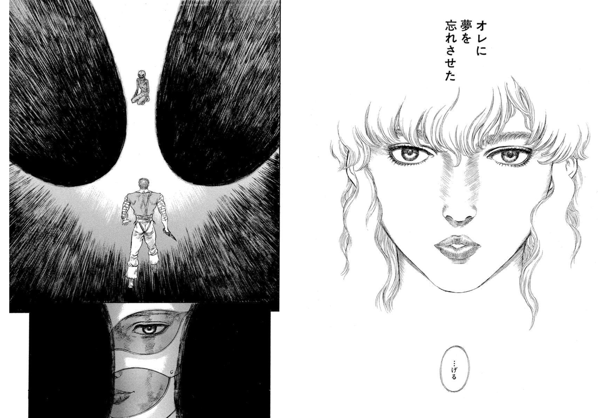
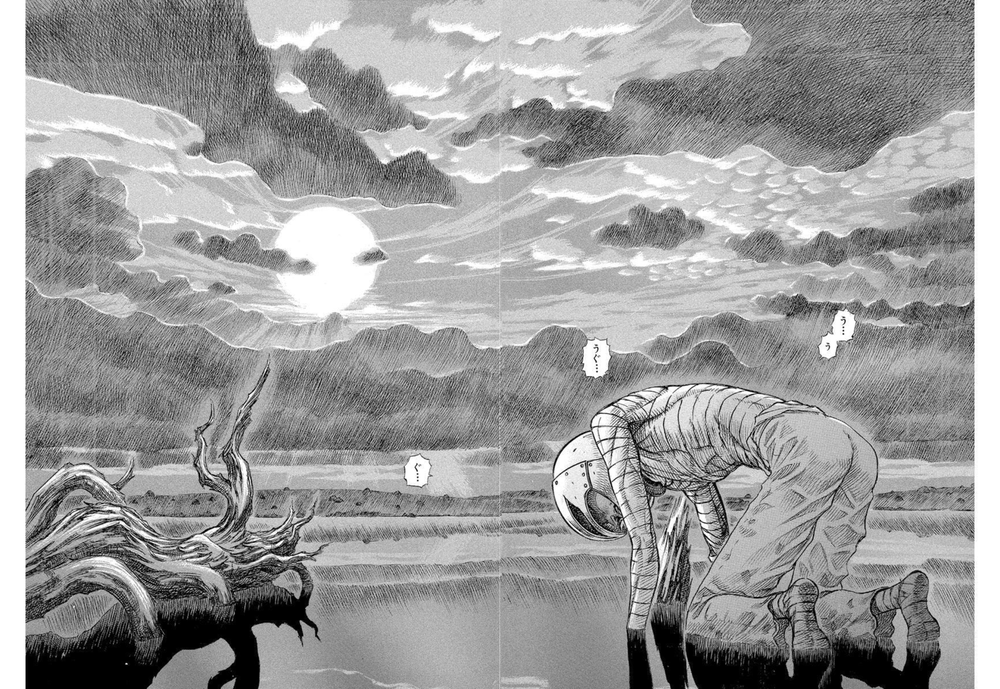
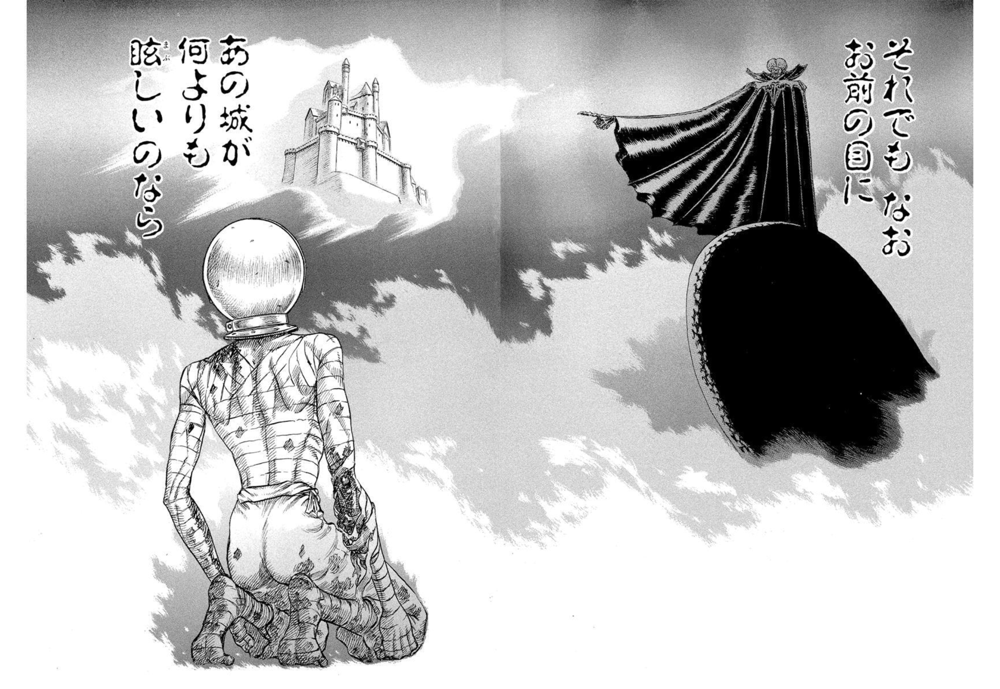
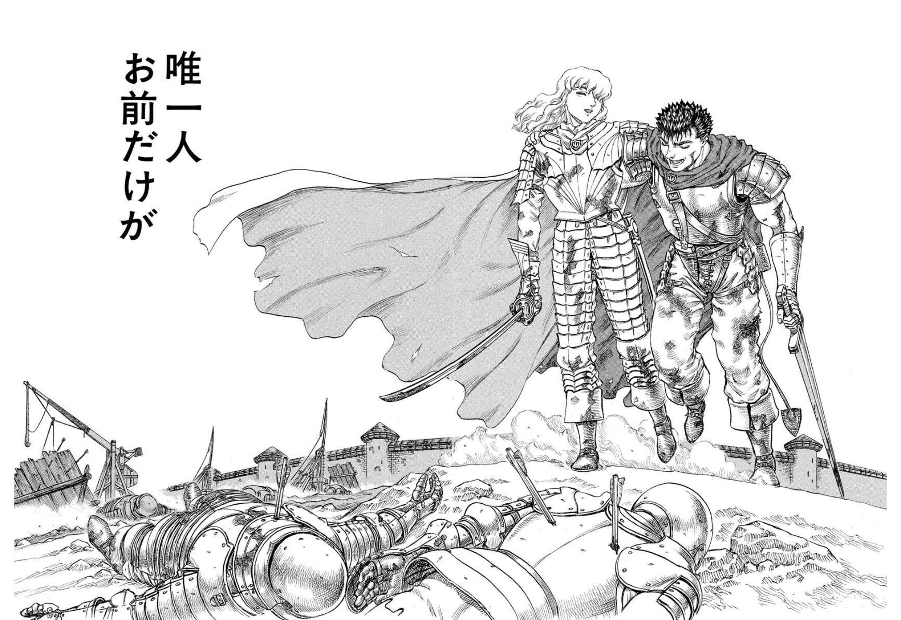
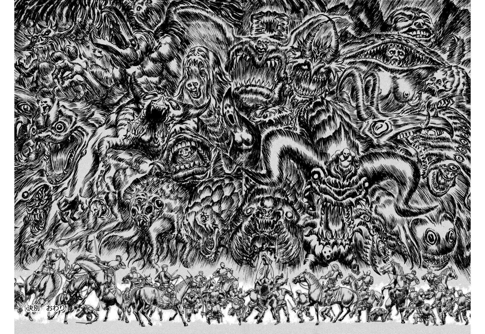

読書ログ #1 —— ベルセルク：夢が共同体を供物に変えるとき
救済と支配は、同じ仕草から始まる。
1. ただのダークファンタジーとして読むのは、もったいない
ベルセルクを、ただのダークファンタジーとして読むのは、少しもったいない。
もちろん、圧倒的な画力も、暴力も、神話的なスケールも、絶望の濃度も、それだけで凄まじい。けれど僕が特に惹かれているのは、そこに描かれた組織論的な怖さのほうだ。
特に黄金時代篇のグリフィスと鷹の団は、かなり強烈な構造を持っている。一言でいえば、こう読める。
黄金時代篇は、天才型リーダーに引力を持たされた組織が、最後にリーダー個人の夢の供物になる話だ。
これは作品の一側面にすぎない。けれど、心理OS・組織OSという観点から見ると、現実の組織にそのまま響く何かがある気がする。
ここでいう心理OSとは、人が世界をどう見て、何に価値を置き、どんな行動を自然に選ぶかを決める、内側の作動原理のことだ。組織OSは、その組織スケール版だと思ってもらえればいい。
2. グリフィスという意味生成装置
グリフィスは、単なるカリスマではない。彼は、人に意味を与える存在だった。
鷹の団のメンバーは、もともと高貴な生まれでも、社会的に保証された存在でもない。多くは、戦場で生きるしかなかった傭兵たちだ。
そこにグリフィスは、ひとつの物語を置いた。お前たちはただの傭兵ではない。歴史の一部になれる。この男についていけば、世界の階層を越えられる。いつか、城に届くかもしれない。
組織論として見ると、これはかなり強い。
人は、報酬だけでは動かない。自分の人生が、何か大きな物語の一部になっていると感じたとき、限界を越えて動く。グリフィスは、それを可能にした。鷹の団に、単なる仕事ではなく、意味を与えた。だから鷹の団は、軍隊でありながら、どこか宗教共同体に近い熱を持っていた。
ただ、ここに危うさがある。その共同体の中心にあるのは、最終的には「共同体の幸福」ではない。グリフィス個人の夢だ。
3. 救済と支配は、同じ仕草で行われる
グリフィスの怖さは、最初から悪人として人を搾取しているわけではない、という点にある。
彼は、実際に人を救う。キャスカもそうだし、鷹の団の多くのメンバーもそうだろう。彼についていくことで、自分の人生に意味が生まれる。居場所が生まれる。誇りが生まれる。
ただ、その救済は、同時に支配でもある。
救われた人間は、救ってくれた夢に、自分を捧げるようになる。
これがグリフィス型組織の美しさであり、危険性でもある。組織としての流れはこうだ。
個人の孤独・不満・野心 ↓ グリフィスという美しい中心 ↓ 「俺たちは何者かになれる」という物語 ↓ 鷹の団という共同体 ↓ 王国・階級・歴史への上昇
ここまでは、強い組織の作り方そのものでもある。人に意味を与え、人を束ね、個人の人生を大きな物語に接続し、普通では出せない力を引き出す。
問題は、その物語が強くなりすぎたときに起きる。
4. ガッツの離脱は、ただの退団ではない
グリフィスの組織が崩れ始めるきっかけは、ガッツの離脱だ。
ガッツは鷹の団に所属していた。けれど彼は、グリフィスの夢の部品では終われなかった。「対等の友とは、自分自身の夢を持つ者だ」というグリフィス自身の言葉を聞いて、ガッツは自分の人生を探し始める。
ガッツにとっては、自己獲得の始まりだった。しかしグリフィスにとっては、致命的だった。ガッツだけは、グリフィスの重力圏に完全には溶けなかったからだ。
グリフィスの作動原理は、本来こうだったはずだ。
夢 > すべて
でも、ガッツに対してだけは、どこかでこうなっていた。
ガッツ ≒ 夢
この時点で、グリフィスの理想実現OSは、すでにバグっている。夢のためにすべてを従属させる人間が、ガッツだけは、その夢の外側から自分を揺らす存在にしてしまった。

だからガッツの離脱は、単なる戦力低下ではない。グリフィスにとっては、自己物語そのものを破壊される出来事だった。
5. 触 —— 共同体を資源として確定する儀式
触は、宗教的・神話的には供犠の儀式だ。ただ、組織論として見ると、もう一段怖い。
触とは、こう言える。
リーダーが、共同体を「目的」ではなく「資源」として最終確定した瞬間。
ガッツの離脱のあと、グリフィスは転落する。一年の拷問で、声も、夢も、身体も失う。

それでも、彼の中で消えなかったものがある。城だ。届かなかった夢が、なお何よりも眩しい。

そして、捧げる瞬間が来る。
ここを「夢に目が眩んだ」の一言で片づけるのは、たぶん雑だ。あの一点のグリフィスには、いくつもの圧が同時に重なっていた。
ひとつは、サンクコスト。彼はすでに、夢のためにすべてを投じていた。一年の拷問、失った身体、そこまでに死んでいった仲間たち。ここで夢を諦めれば、その全部が「無意味だった」ことになる。積み上げすぎたものが、引き返すことを許さない。
ひとつは、現状と理想の剥離。城は、なお何よりも眩しい。けれど今の自分は、声も身体も失い、地を這うことしかできない。理想の高さと、現実の低さ。その落差が、耐えられないほど開いている。
ひとつは、彼という存在が、夢と一体化しすぎていたこと。夢を手放すことは、グリフィスにとって、自分そのものを失うことだった。ガッツに「夢を忘れさせられた」あの感覚も、ここで効いてくる。
そして、もう取り返せないものがある。ガッツと、対等になれないということだ。グリフィスにとって対等とは、自分の夢を持つ者のことだった。ガッツはその夢を探して去り、自分の足で立った。けれど今の自分は、夢に手が届かないどころか、地を這う身体になっている。唯一、対等でありたかった相手の前に、もう対等な者として立てない —— それは、たぶん一番こたえた。
これらが一斉に重なった一点で、彼は選んだ。共同体を、供物として。

ここが残酷なところだ。鷹の団は、グリフィスにとって大切だった。それは間違いない。でも、大切だったからこそ、供物になる。 どうでもいいものでは、供物にならない。
つまり触の恐ろしさは、こういう構造にある。
愛していたものを、夢の燃料に変える。
メンバーが人生を預けた夢。誇りだった共同体。仲間との関係。居場所。献身。信頼。それらすべてが、最後にはリーダー個人の上昇のために消費される。

だから触は、単なる虐殺ではない。共同体の意味体系が、リーダーの夢の素材に変換される儀式だ。
6. 心理OS で見る、それぞれの作動原理
この構造は、各キャラクターの心理OSで見ると、もう少しはっきりする。
- グリフィス（理想実現OS） —— 世界は上昇可能であり、自分には到達すべき城がある。人間関係はその夢に照らして意味づけられる。夢を持たない者は、真の友ではない
- ガッツ（生存戦闘OS → 自己獲得OS） —— 「生きる＝戦う」から、「自分の火を見つけるために戦う」へ移行する
- キャスカ（献身OS → 主体性回復OS） —— 「私は救われた、だからこの人の夢を支える」から、「私は私自身の感情を持っていい」へ
- ジュドー（観察・調停OS） —— 場をよく見る。誰が何を感じているかを察する。自分が主役でなくてもいい
- リッケルト（継承・目撃者OS） —— 失われたものを覚えている。英雄譚を無邪気には信じず、憎しみだけにも染まりきらない
こうして見ると、触は単に人が殺される場面ではない。それぞれが持っていたOS、意味、居場所、関係性が、まとめて破壊される場面だ。だからこそ、重い。
7. これは、現実にも起きる
もちろん、現実に触はない。悪魔もベヘリットもない。
でも、構造として似たことは起きる。強い理想や物語を持った組織が、いつの間にか人間をその物語の燃料として扱い始める。 これは現実にもある。
典型的には、こういう流れだ。
強い理想・ミッション ↓ 人が集まり、自己物語を重ねる ↓ 献身が美徳化する ↓ 違和感や異論が「夢を壊すもの」扱いされる ↓ 現実より物語が優先される ↓ 誰かが犠牲になる
重要なのは、最初から悪ではないことだ。むしろ最初は美しい。人を救い、人生に意味を与え、退屈な仕事を誇りある挑戦に変える。だから強い。けれど、その夢が共同体より上位に置かれた瞬間、組織は人を消費し始める。
いくつか、現実の形を並べてみる。どれも「悪人がいたから壊れた」のではない、というのが肝だ。
- Theranos 型 —— 医療を変えるという理想が強すぎて、技術的な現実検証より、創業者の物語を守ることが優先された。理想実現OSが現実検証OSを抑圧した形
- WeWork 型 —— 「これはただの不動産業ではない」という自己物語が、事業実態を覆った。物語生成OSが現実接地OSを上書きした形
- Uber 初期型 —— 勝つこと・市場を取ることが先に立ち、ケア・倫理・内部統制が後回しになった。勝利OSの暴走で、人間が消耗品化した形
- Enron 型 —— 天才主義・成果主義が過剰になり、協力や誠実より「勝者に見えること」が重要になった。エリート選別OSが共同体維持OSを壊した形
- チャレンジャー号事故型 —— 分かりやすい悪役はいない。「前回も大丈夫だった」が積み重なり、危険信号が正常業務に吸収された（逸脱の正常化）。成功が続くと、異常検知OSが鈍る
- Volkswagen 型 —— 達成圧とガバナンス不全。「できない」と言えない構造の中で、不正が合理的な選択肢のように見えてしまった。達成OSの暴走
そして、世の多くの組織のしょうもなさ、あるいは残酷さは、ここにある。グリフィスほどの意味生成も、カリスマ性も、救いもないのに、共同体を資源とみなしてしまっている。 供物にできるほどの夢すら配らずに、燃料化だけが起きる。
8. 強いOSは、強いだけでは危ない
ここまで見てくると、大事なことが見えてくる。強いOSそのものが悪いわけではない。
理想実現OSは人を前に進める。勝利OSは突破力を生む。献身OSは仲間を支える。達成OSは高い成果を生む。物語生成OSは人に意味を与える。
問題は、それらが単独で強くなりすぎることだ。
心理OSも組織OSも、強ければ強いほど、世界の見方を固定する。そして、自分に都合の悪い現実を、見えにくくする。理想実現OSは現実検証を嫌い、勝利OSは他者の痛みに鈍くなり、献身OSは自分の限界を無視し、達成OSは手段の正しさを後回しにし、物語生成OSは地味な真実を軽視し、成功継続OSは異常を異常と感じなくなる。
だから心理OSに必要なのは、強さだけではない。
自分たちのOSが、何を見えなくしているのかを観測する力。
完璧な人間も、完璧なOSもない。だからこそ、複数のOSを良い塩梅で混ぜて、互いの盲点を補い合う構造を作っていく —— たぶん、組織設計の中核はそこにある。
9. グリフィス型組織の、危険なサイン
この観点から見ると、危ない組織にはいくつかのサインがある。
- ミッションへの疑問が、裏切りのように扱われる
- 現実的な懸念を言う人が、冷めた人・弱い人・分かっていない人扱いされる
- リーダー個人の夢と、組織全体の目的が、分離できなくなる
- メンバーの献身が、いつの間にか当然視される
- 撤退・延期・縮小が、選択肢として語れなくなる
- 数字や事実より、物語の美しさが優先される
- 違和感を持った人が、黙るか、離れるしかなくなる
夢があることは悪くない。強い物語があることも悪くない。何かを成すには、むしろ必要なことが多い。ただ、夢が共同体より上位に来たとき、組織は人を消費し始める。
10. 夢は、人を立たせるためにある
ベルセルクのグリフィスは、人を惹きつけた。人に意味を与えた。鷹の団を、ただの傭兵団ではなく、歴史に挑む共同体にした。
だからこそ、彼の裏切りは重い。最初から空っぽの詐欺師だったなら、ここまで響かない。本当に美しかったからこそ、最悪なのだ。
組織でも同じだと思う。強い夢は、人を立たせる。弱かった人間に誇りを与え、退屈だった仕事を意味ある挑戦に変え、バラバラだった人間をひとつの方向に束ねる。
でも、その夢が強くなりすぎると、人を飲み込む。人間が、夢のための燃料になる。共同体が、リーダーの上昇のための供物になる。
だから、自分たちが持つべき問いは、これだと思う。
この夢は、人を立たせているか。それとも、人を供物にしているか。
心理OSも、組織OSも、最終的にはここに戻る。強いOSを持つことは重要だ。ただ、OSは自分たちを前に進めるためのものであって、現実や他者を上書きするためのものではない。
僕が「組織を観測する」ということにこだわっているのも、根はここにある。良い重力は、星を潰さない。むしろ、各星が自分の核融合を始める方向へ働く。重力の中心にいる人間が、自分にこう問い続けられるかどうか —— 自分の重力は、周囲を生かしているか。それとも、周囲を飲み込み始めているか。
それが、ベルセルクから読み取れる、かなり現実的な組織論だ。
次回予告
次回 #2 は、思想書の棚から一冊。共同体を成立させる「共有された物語」を、別の角度から扱う予定。
本記事は三浦建太郎『ベルセルク』(白泉社) への個人的な考察です。引用画像は同作より。
OrbitLens / machuz